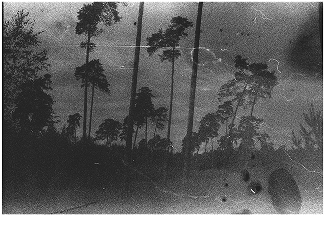
Lifelines. Walking across borders
Lifelines is a durational performative passage exploring memory, distance and embodied perception through a solitary walk from Dusseldorf to Polish-Ukrainian border.
Year(s): 2025
Medium: performance, the walk, analog photography, writings
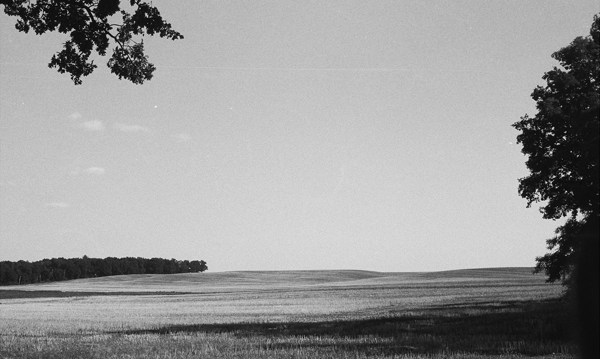
Project concept:
<<<<<<< HEAD In July 2025, I realized my latest artistic project - “Lifelines”, a life performance that started in Düsseldorf and ended at the Poland-Ukrainian border in the autumn of 2025.
Over the course of nearly three months, I walked approximately 1,500 kilometres alone,
photographing each new place along the route. The resulting images trace the path of this
journey — a walking line that becomes a metaphor for a lifeline, marked by continuity,
vulnerability, and solitude.
The project was initially inspired by Marina Abramović’s performance The Lovers and began as
a personal manifesto about love and unity beyond obstacles. As the journey unfolded,
however, the realities of contemporary war and displacement gradually reshaped the meaning
of the work.
Lifelines takes the form of a solitary performative walk from Germany towards Ukraine,
exploring themes of migration, resilience, cultural connection, and the fragile geopolitical
landscape of the present.
The walk itself becomes the central image of the project — a line that crosses physical borders while revealing invisible ones: between past and future, separation and transformation, personal experience and collective history.
I am from Kharkiv, Ukraine and this walk became a way to reconnect landscapes, memories, and histories across borders. ======= In July 2025, I realized my latest artistic project - “Lifelines”, a life performance that started in Düsseldorf and ended at the Poland-Ukrainian border in the autumn of 2025.
Over the course of nearly three months, I walked approximately 1,500 kilometres alone, photographing each new place along the route. The resulting images trace the path of this journey — a walking line that becomes a metaphor for a lifeline, marked by continuity, vulnerability, and solitude.
The project was initially inspired by Marina Abramović’s performance The Lovers and began as a personal manifesto about love and unity beyond obstacles. As the journey unfolded, however, the realities of contemporary war and displacement gradually reshaped the meaning of the work.
Lifelines takes the form of a solitary performative walk from Germany towards Ukraine, exploring themes of migration, resilience, cultural connection, and the fragile geopolitical landscape of the present.
The walk itself becomes the central image of the project — a line that crosses physical borders while revealing invisible ones: between past and future, separation and transformation, personal experience and collective history.
I am from Kharkiv, Ukraine and this walk became a way to reconnect landscapes, memories, and histories across borders. >>>>>>> 46211f2e141c8d66e73627d2c15fa447356784db
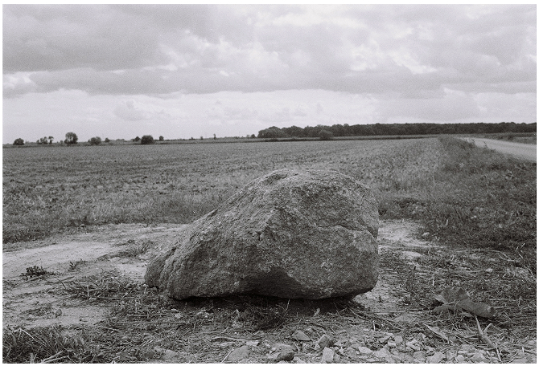
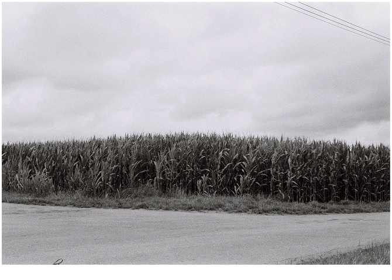
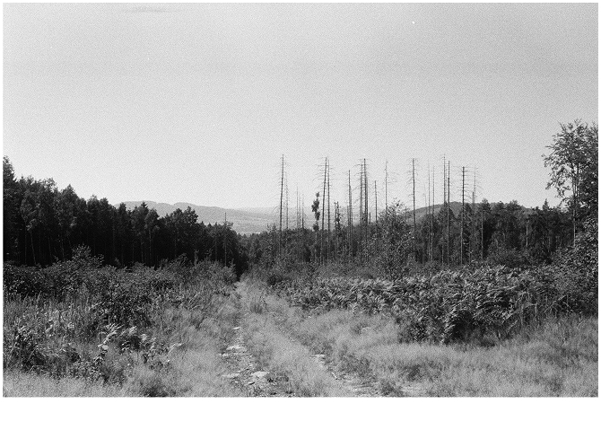
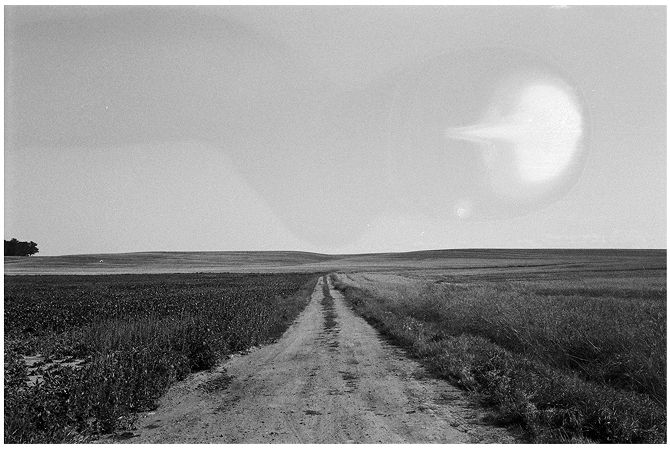
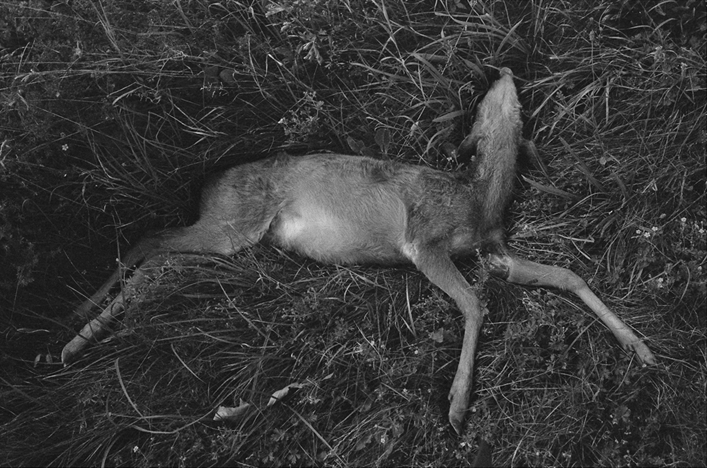
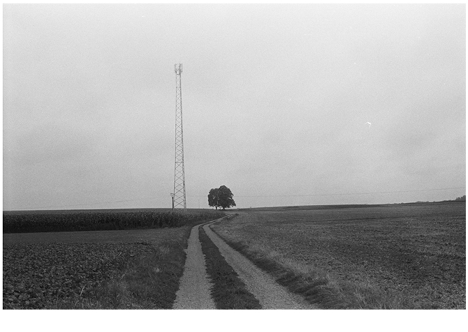
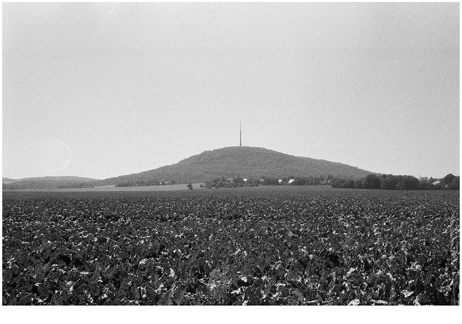
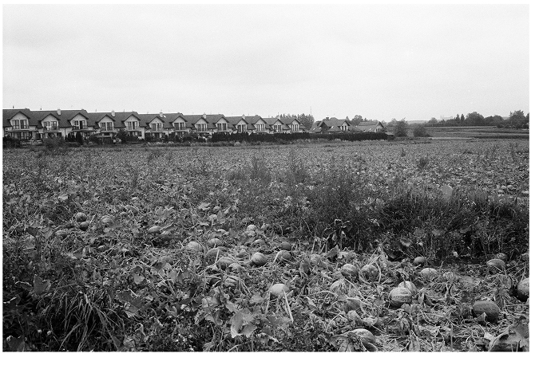
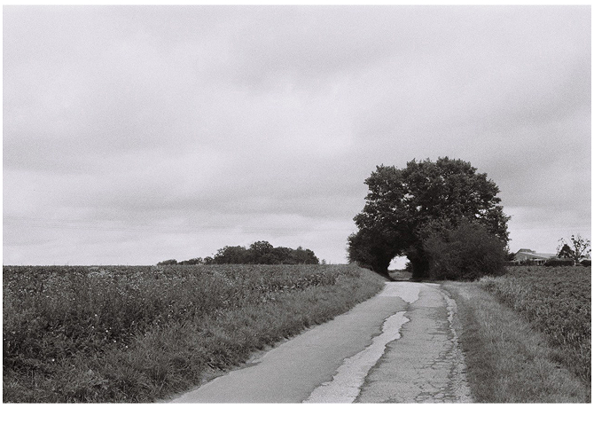
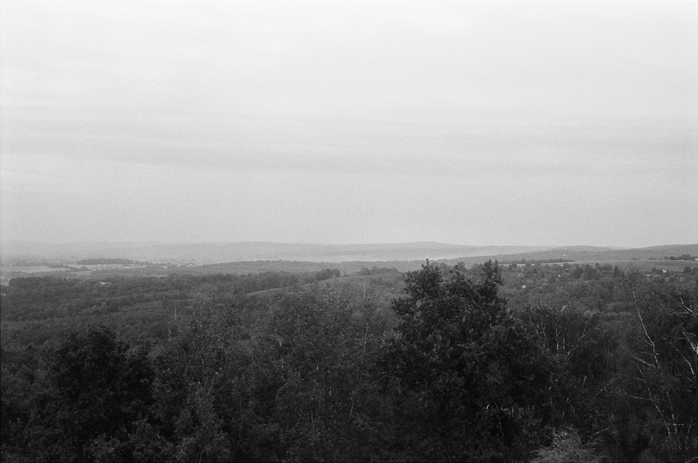
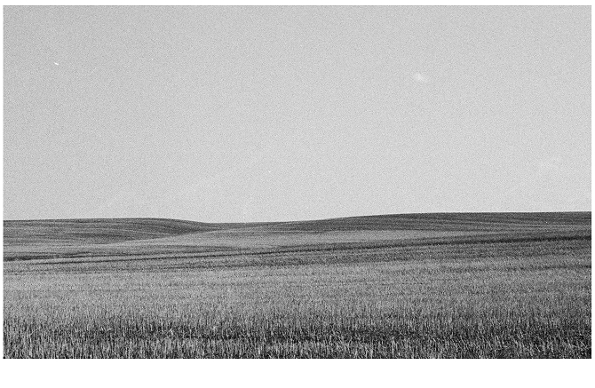
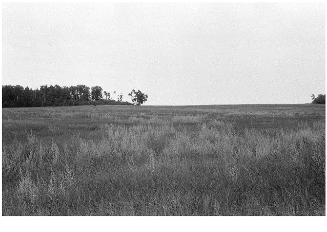
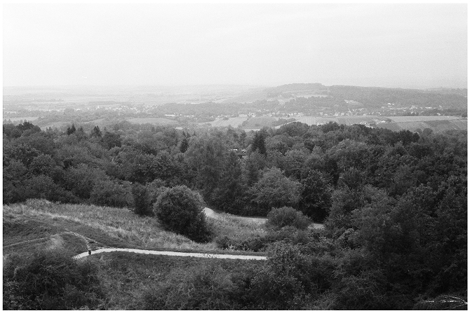